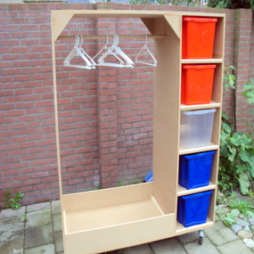
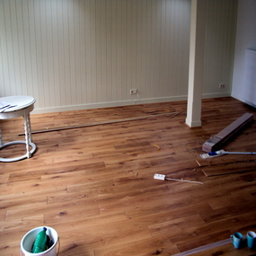
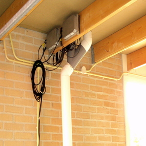

Welkom
Ik ben Piet van der Meulen en ik woon in gezellig Dokkum, Friesland. Ik ben klusser in de ruimste zin van het woord: van timmeren, behangen, sausen en verven tot elektra, tuinonderhoud en loodgieterswerk en het plaatsen van keukens ben ik voor u beschikbaar.
U kunt u altijd contact met mij opnemen, via deze website of door te bellen naar 0649950319.

Badkamers & Toiletten
Belangrijkste bij het maken van een badkamer is dat er geen
lekkages ontstaan. Gelukkig zijn er tegenwoordig veel
materialen om dit te voorkomen.

Kasten
Soms is het niet mogelijk om een kast te kopen die op een
bepaalde plek moet komen te staan. De oplossing is dan om
een kast op maat te maken of de kast in een bepaalde hoek
ter plekke te maken.

Renovatie & Onderhoud
Ik doe regelmatig verbouwingen, renovaties en onderhoud.
Van een simpele nieuwe verflaag tot afbreken en opnieuw
opbouwen.

Schilderwerk
In de loop der jaren heb ik reeds veel huizen mogen
schilderen, voornamelijk op het eiland Schiermonnikoog.

Vloeren
Ook het leggen van vloeren behoord tot mijn werkzaamheden.
Belangrijk bij het leggen is dat er aan de zijkanten
ruimte blijft voor het 'werken' van het hout/laminaat.

Contact
Heeft u vragen? Of wilt u een offerte, of een afspraak?
Neem gerust contact met mij op.